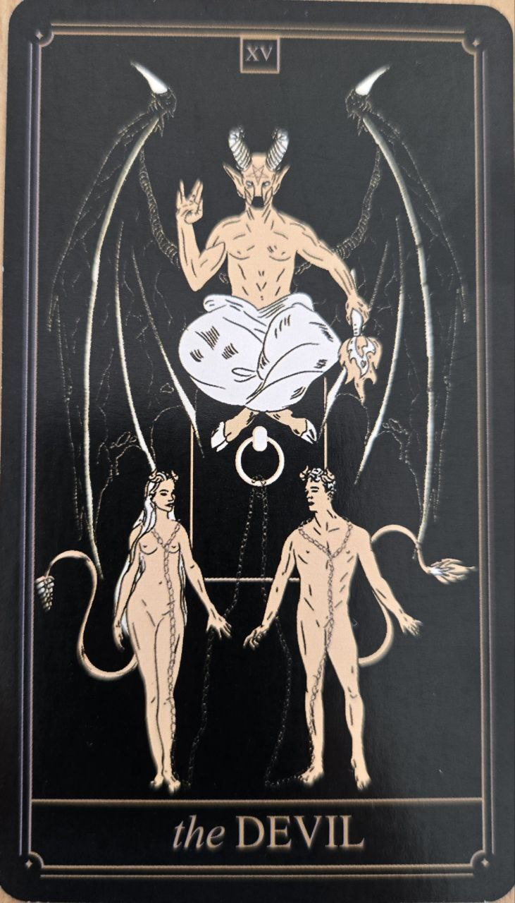

Diabol je kartou pokušenia, závislostí a obmedzení, ktoré si často vytvárame sami. Napriek svojmu názvu nepredstavuje čisté zlo, ale skôr situácie, v ktorých strácame slobodu alebo kontrolu nad vlastným životom.
Táto karta nás vyzýva pozrieť sa na svoje strachy, túžby a návyky úprimne a bez prikrášľovania.
Diabol symbolizuje pripútanosť, ilúzie a nezdravé vzorce správania. Môže upozorňovať na situácie, v ktorých človek zostáva zo zvyku, strachu alebo pohodlnosti.
Karta pripomína, že mnohé obmedzenia sú silné len dovtedy, kým im veríme.
Na karte býva démonická postava a dve postavy pripútané reťazami. Reťaze sú však často voľné, čo naznačuje, že oslobodenie je možné.
Tma a oheň symbolizujú silné vášne, túžby a inštinkty.>
Diabol nie je kartou beznádeje. Práve naopak – upozorňuje na problém, ktorý možno rozpoznať a prekonať.